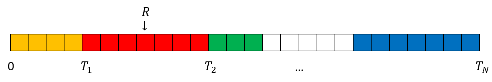
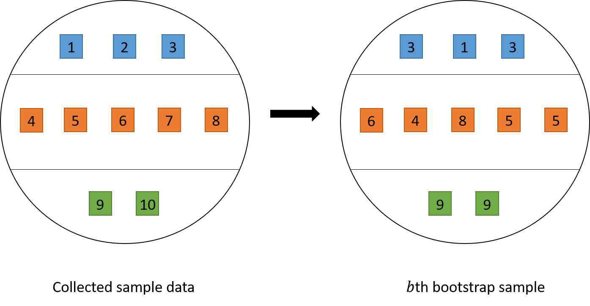
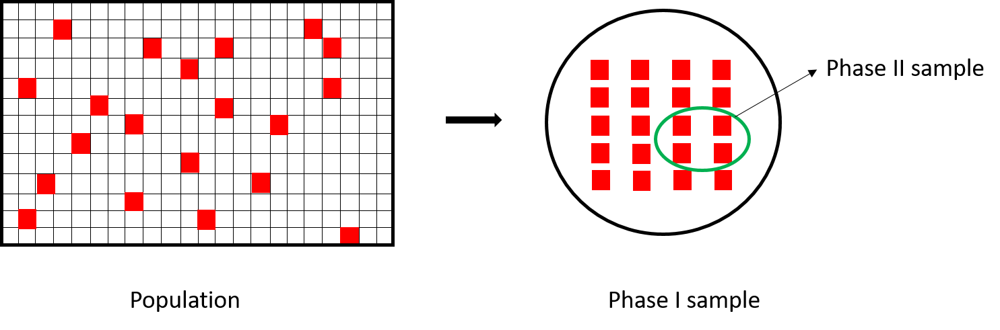

6 Other Topics in Survey Sampling
6.1 Sampling with Unequal Probabilities
6.1.1 Motivation
Recall that SRS is a sampling scheme where every unit has the same probability of being selected \(\pi_i = \frac{n}{N}\). In Chapter 5, we also discuss about cluster sampling schemes using SRS, where the selection probability among psus are equal. However, there can be cases in survey sampling where we want to sample with unequal probabilities, i.e., to sample some psus with higher probabilities than others. For example, we have seen in Chapter 3 that with optimal/Neyman allocation, we can vary the sampling probabilities across strata to achieve optimal or better variance compared to proportional allocation, where every psu has the same probability of being selected.
Another example is when cluster sizes vary, we may want allocate higher selection probabilities to large clusters because they may contain more observation units, thus more information, than smaller clusters. To account for cluster sizes when designing the sampling procedure, we can let \(\psi_i = \Pr(i \in S) = M_i/M_0\). This choice of psu sampling probabilities is called proportional to size (PPS) sampling.
6.1.2 Sampling Algorithms
6.1.2.1 Sampling with Replacement
Sampling with replacement is a type of sampling algorithm where we conduct the first draw to obtain the first psu, say \(i\), in the sample, but instead of removing the \(i\)th psu from the psu pool to conduct the second draw (like in SRS), we put it back into the psu pool to conduct the second draw and so on. With this type of sampling procedure, it is possible that a psu appears multiple times within the sample. That is, our sample may not comprise unique psus. However, the advantage of this method is that the probability \(\psi_i\) that a psu is selected on the first draw, second draw, third draw, and so on remains the same. This makes the sampling algorithm much simpler. There are two famous algorithms for sampling with replacement.
Cumulative size method:
Assign a measure of size (\(X_i\)) to each psu \(i\).
- \(X_i\) is an integer that is proportional to the inclusion probabilities: \(X_i \propto \psi_i\). In PPS sampling, we set \(X_i = M_i\).
Calculate the cumulative total \(T_i = T_{i-1}+X_i\)
Generate a random number \(0 < R \le T_N\) where \(T_N\) is the final total.
If \(T_{i-1} < R \le T_i\), select the \(i\)th psu.
Figure 6.1 gives a visualization for the cumulative size method.

Figure 6.1: An illustration of the cumulative size method. With the generated \(R\) in this figure, we will choose the 2nd psu.
Lahiri’s method: Lahiri (1951) method is an example of the rejective method, where we
Assign a measure of size (\(X_i\)) to each psu \(i\), similar to the cumulative method.
Draw a random number \(i\) between \(1\) and \(N\), this indicates the psu you are considering.
Draw a random number \(R\) between \(1\) and \(\max_{1 \le j \le N}M_i\). If \(R \le X_i\), then include \(i\) in the sample; otherwise go back to Step 2.
Repeat until the desired sample size is obtained.
6.1.2.2 Sampling without Replacement
Sampling without replacement ensures that we obtain unique psus in our sample. However, it can be difficult to ensure the prescribed unequal probabilities when sampling without replacement. Some methods proposed for unequal probability sampling without replacement are the pivotal method (Deville and Tille 1998), the elimination method (Sampford 1962), and the Chao’s method (Chao 1982). For a review, see Tillé (2023) or Tillé (2006).
6.1.3 Estimation
As discussed in Chapter 2, we can use the Horvitz-Thompson estimator to obtain an unbiased estimate of the population total or mean under any probability sampling scheme, with possibly unequal probabilities: \[ \widehat{T}_{HT} = \sum_{i\in S}\frac{y_i}{\pi_i}. \]
The general variance formula, as derived in Equation (2.12) is \[\begin{equation} Var(\widehat{T}_{HT}) = \sum_{i=1}^N\frac{y_i^2}{\pi_i^2}\pi_i(1-\pi_i) + 2\sum_{i\ne j}\frac{y_iy_j}{\pi_i\pi_j}(\pi_{ij} - \pi_i\pi_j) \tag{6.1} \end{equation}\] where \(\pi_{ij} = \E[Z_iZ_j]\) is joint the probability that both units \(i\) and \(j\) are included in the sample.
We can prove that the variance formula can also be written as \[\begin{equation} Var(\widehat{T}_{HT}) = \sum_{i\ne j}(\pi_i\pi_j - \pi_{ij})\left(\frac{y_i}{\pi_i} - \frac{y_j}{\pi_j}\right)^2 \tag{6.2} \end{equation}\] This is called the Sen-Yates-Grundy (SYG) form of the variance (Sen 1953; Yates and Grundy 1953).
Proof. We have \[\begin{align*} & \sum_{i\ne j}(\pi_i\pi_j - \pi_{ij})\left(\frac{y_i}{\pi_i} - \frac{y_j}{\pi_j}\right)^2 \\ & = \sum_{i\ne j}(\pi_i\pi_j - \pi_{ij})\left(\frac{y_i^2}{\pi_i^2} + \frac{y_j^2}{\pi_j^2} - 2\frac{y_i}{\pi_i}\frac{y_j}{\pi_j}\right) \\ & = \sum_{i\ne j}(\pi_i\pi_j - \pi_{ij})\left(\frac{y_i^2}{\pi_i^2} + \frac{y_j^2}{\pi_j^2}\right) + 2\sum_{i\ne j}\frac{y_iy_j}{\pi_i\pi_j}(\E[Z_iZ_j] - \pi_i\pi_j) \\ \end{align*}\] To prove that this equals the original formula (6.1), we only need to prove \[ \sum_{i\ne j}(\pi_i\pi_j - \pi_{ij})\left(\frac{y_i^2}{\pi_i^2} + \frac{y_j^2}{\pi_j^2}\right) = \sum_{i=1}^N\frac{y_i^2}{\pi_i^2}\pi_i(1-\pi_i) \] We note that since the sample size is \(n\), \(\sum_{i=1}^NZ_i = n\) for every possible sample and thus \(\sum_{i=1}^N \pi_i = \E[\sum_{i=1}^N Z_i] = n\). \[\begin{align*} \sum_{i\ne j}\pi_i\pi_j\left(\frac{y_i^2}{\pi_i^2} + \frac{y_j^2}{\pi_j^2}\right) & = \frac{1}{2}\sum_{i=1}^N\sum_{j=1}^N\pi_i\pi_j\left(\frac{y_i^2}{\pi_i^2} + \frac{y_j^2}{\pi_j^2}\right) - \sum_{i=1}^N \pi_i^2 \frac{y_i^2}{\pi_i^2} \\ & = \frac{1}{2}\sum_{i=1}^N \pi_i\frac{y_i^2}{\pi_i^2} (\sum_{j=1}^N \pi_j) + \frac{1}{2}\sum_{j=1}^N \pi_j\frac{y_j^2}{\pi_j^2} (\sum_{i=1}^N \pi_i) - \sum_{i=1}^N \pi_i^2 \frac{y_i^2}{\pi_i^2} \\ & = \sum_{i=1}^N \pi_i\frac{y_i^2}{\pi_i^2} (\sum_{j=1}^N \pi_j) - \sum_{i=1}^N \pi_i^2 \frac{y_i^2}{\pi_i^2} \\ & = \sum_{i=1}^N \pi_i(\sum_{j=1}^N \pi_j - \pi_i)\frac{y_i^2}{\pi_i^2} \\ & = \sum_{i=1}^N \pi_i(n - \pi_i)\frac{y_i^2}{\pi_i^2} \end{align*}\] and also \[\begin{align*} \sum_{i\ne j}\pi_{ij}\left(\frac{y_i^2}{\pi_i^2} + \frac{y_j^2}{\pi_j^2}\right) & = \frac{1}{2}\sum_{i=1}^N \frac{y_i^2}{\pi_i^2} \sum_{j\ne i} \pi_{ij} + \frac{1}{2}\sum_{j=1}^N \frac{y_j^2}{\pi_j^2} \sum_{i\ne j} \pi_{ij} \\ & = \sum_{i=1}^N \frac{y_i^2}{\pi_i^2}\sum_{j\ne i} \pi_{ij} \\ & = \sum_{i=1}^N \frac{y_i^2}{\pi_i^2}\sum_{j\ne i} \E[Z_iZ_j] \\ & = \sum_{i=1}^N \frac{y_i^2}{\pi_i^2} \E\left[Z_i\sum_{j\ne i} Z_j\right] \\ & = \sum_{i=1}^N \frac{y_i^2}{\pi_i^2} \E\left[Z_i(\sum_{j=1}^N Z_j - 1)\right] \\ & = \sum_{i=1}^N \pi_i (n-1) \frac{y_i^2}{\pi_i^2} \end{align*}\] Combining these two we get \[ \sum_{i\ne j}(\pi_i\pi_j - \pi_{ij})\left(\frac{y_i^2}{\pi_i^2} + \frac{y_j^2}{\pi_j^2}\right) = \sum_{i=1}^N\frac{y_i^2}{\pi_i^2}\pi_i(1-\pi_i) \] as required.
Although Equations (6.1) and (6.2) are equivalent, they lead to different unbiased estimators of the variance: \[\begin{align*} \widehat{Var}_{HT}(\widehat{T}_{HT}) & = \sum_{i\in S}\frac{y_i^2}{\pi_i^3}\pi_i(1-\pi_i) + 2\sum_{i\ne j \in S}\frac{y_iy_j}{\pi_i\pi_j}\frac{\pi_{ij} - \pi_i\pi_j}{\pi_{ij}} \\ \widehat{Var}_{SYG}(\widehat{T}_{HT}) & = \sum_{i\ne j \in S}\frac{\pi_i\pi_j - \pi_{ij}}{\pi_{ij}}\left(\frac{y_i}{\pi_i} - \frac{y_j}{\pi_j}\right)^2 \end{align*}\] In general, the SYG estimator of the variance is more stable and is preferred for most applications.
6.1.4 Alternative Variance Formulas
Although the SYG and HT variance estimators are unbiased estimators of the exact variance, they require the knowledge of \(\pi_{ij}\), the joint inclusion probabilities for two distinct units, which, in practice, may not be available to us. Furthermore, it can be possible that the HT and SYG variance estimators give negative estimates. This does not make sense for a variance estimation. Therefore, alternative variance formulas have been proposed to approximate or estimate the variance.
6.1.4.1 Conservative Variance Formula
Note that the variance for the HT estimator of the total in Equation (6.1) can also be written as \[ Var(\widehat{T}_{HT}) = \sum_{i=1}^N\sum_{j=1}^N\frac{y_iy_j}{\pi_i\pi_j}(\pi_{ij} - \pi_i\pi_j) \] where \(\pi_{ii} = \pi_i\). The HT estimator for the variance can then be written as \[ \widehat{Var}_{HT}(\widehat{T}_{HT}) = \sum_{i\in S}\sum_{j\in S}\frac{y_iy_j}{\pi_i\pi_j}\frac{\pi_{ij} - \pi_i\pi_j}{\pi_{ij}} = \sum_{i\in U}\sum_{j\in U} Z_iZ_j\frac{y_iy_j}{\pi_i\pi_j}\frac{\pi_{ij} - \pi_i\pi_j}{\pi_{ij}} \] where \(Z_i\) are the binary inclusion indicator variables as discussed in Section 2.1.3. When some \(\pi_{ij}\) is 017, this estimator is undefined. Using Young’s inequality, Aronow and Samii (2013) suggest a modification of the HT variance estimator: \[ \widehat{Var}_{C}(\widehat{T}_{HT}) = \sum_{i\in U}\sum_{j\in U, \pi_{ij} > 0}Z_iZ_j\frac{y_iy_j}{\pi_i\pi_j}\frac{\pi_{ij} - \pi_i\pi_j}{\pi_{ij}} + \sum_{i\in U}\sum_{j \in U, \pi_{ij} = 0}\left(Z_i\frac{y_i^2}{2\pi_i}+Z_j\frac{y_j^2}{2\pi_j}\right) \]
This variance estimator is conservative, in the sense that \(\E[\widehat{Var}_{C}(\widehat{T}_{HT})] \ge Var(\widehat{T}_{HT})\).
6.1.4.2 With Replacement Approximation
To deal with unknown joint inclusion probabilities, Durbin (1953) suggest to assume that the units were selected with replacement and use the with-replacement variance estimator.
First, consider the case where only one unit is selected, i.e., \(n=1\), and the inclusion probability for unit \(i\) is \(\psi_i\), which can be unequal among the units. In that case, the Horvitz-Thompson estimator for the population total is still \(\sum_{i\in S}\frac{y_i}{\psi_i}\) and unbiased. Suppose the unit \(i\) is selected, then \(u_i = \frac{y_i}{\psi_i}\) is an unbiased estimator of the population total \(t_U\).
When we sample \(n\) units with replacement, it is similar to conducting \(n\) times the sampling of size 1, each time we obtain an independent unbiased estimator \(u_i\) of \(t_U\). We can average them to get an estimator of the population total \(t_U\): \[ \widehat{T}_{HH} = \frac{1}{n}\sum_{i\in W}\frac{y_i}{\psi_i} = \frac{1}{n}\sum_{i\in W}u_i = \overline{u} \] where \(W\) records the units selected with replacement in each draw, including the repeats (if happens). That is, different from the sample set \(S\) which contains distinct units in the sample, there can be units that appear more than once in \(W\). This estimator is called the Hansen-Hurwitz estimator (Hansen and Hurwitz 1943).
As each \(u_i\) has variance \(s^2_{U,u}\), \(Var(\widehat{T}_{HH}) = \frac{s_{U,u}^2}{n}\), and such variance can be estimated by \[ \widehat{Var}(\widehat{T}_{HH}) = \frac{S_{S,u}^2}{n} = \frac{1}{n}\frac{1}{n-1}\sum_{i\in W}(u_i - \overline{u})^2 = \frac{1}{n}\frac{1}{n-1}\sum_{i\in W}\left(\frac{y_i}{\psi_i} - \widehat{T}_{HH}\right)^2 \]
Now, assuming that the sampling is done with replacement. Note that the probability of inclusion in each with-replacement draw is \(\psi_i\), and the draws are repeated \(n\) times independently. Therefore probability that a unit \(i\) is included in the sample over the \(n\) independent with-replacement draw is \(\pi_i = n\psi_i\). Indeed, \[ \widehat{T}_{HH} = \frac{1}{n}\sum_{i\in W}\frac{y_i}{\psi_i} = \sum_{i\in W}\frac{y_i}{\pi_i} = \widehat{T}_{HT} \] So under sampling with replacement, the Hansen-Hurwitz estimator and the Horvitz-Thompson estimator are equivalent. Now assuming that we sample with replacement (although we may not), we obtain the with-replacement simplified variance estimator for \(\widehat{T}_{HT}\): \[ \widehat{Var}_{WR}(\widehat{T}_{HT}) = \frac{1}{n}\frac{1}{n-1}\sum_{i\in S}\left(\frac{y_i}{\psi_i} - \widehat{T}_{HH}\right)^2 = \frac{n}{n-1}\sum_{i\in S}\left(\frac{y_i}{\pi_i} - \frac{\widehat{T}_{HT}}{n}\right)^2 \] This variance estimator does not require the joint inclusion probabilities and is always non-negative, so we can avoid the possibility of getting a negative estimate of the variance, which may happen with the HT or SYG variance estimators.
6.2 Variance Estimation in Complex Surveys
As we have seen in Chapter 4, there are many estimators besides the HT estimators that are more complicated, they can be biased but potentially give us lower mean squared error. In Chapter 5, we also see that as the sampling scheme becomes more complex from one-stage to two-stage cluster sampling, the variance formula can become more and more complicated and more difficult to derive. Meanwhile, in practice, surveys, especially big surveys, can have a very complex designs with multiple stages of cluster sampling, stratification and many auxiliary variables. Therefore, we need some tools or methods that are easier to implement to approximate or estimate the variance, rather than deriving the exact formula and finding an appropriate estimator for such variance.
6.2.1 Linearization (Taylor’s Approximation)
In Chapter 2, Equation (2.11), we proved the variance formula of a linear function \(h(Z_1, Z_2, ..., Z_k) = \sum_{j=1}^k a_kZ_k\) where \(a_k\) are fixed constants and \(X_k\) are random variables: \[ Var\left(\sum_{i=1}^Na_iZ_i\right) = \sum_{i=1}^N a_i^2 Var(Z_i) + 2\sum_{i \ne j}a_ia_j Cov(Z_i,Z_j) \] We used this formula to derive the variance formula for the HT estimator. Similarly, if we can write an estimator as a linear combination of unbiased estimators \(\widehat{T}_1, \widehat{T}_2, ..., \widehat{T}_k\) for the \(k\) population totals \(t_{U,1}, t_{U,2}, ..., t_{U,k}\): \[ \widehat{\theta} = \sum_{j=1}^k a_j\widehat{T}_{j} \] Then we can derive the variance for this estimator as \[ Var(\widehat{\theta}) = Var\left(\sum_{j=1}^k a_j\widehat{T}_{j}\right) = \sum_{j=1}^k a_j^2Var(\widehat{T}_j) + 2\sum_{j\ne l}a_ja_lCov(\widehat{T}_j, \widehat{T}_l) \]
In practice, the estimator \(\widehat{\theta}\) can be a nonlinear function of the totals. For example, in the case of the ratio estimator for one-stage cluster sampling \(\widehat{\overline{Y}}_r = \frac{\overline{Y}_S}{\overline{M}_S} = \frac{\widehat{T}_{HT,y}}{\widehat{T}_{HT,m}}\). In these cases, we can use the Taylor’s theorem from calculus to approximate the nonlinear smooth \(h(t_1, ..., t_k)\) function by a linear function then approximate the variance for the estimator \(\hat{\theta} = h(\widehat{T}_1, ..., \widehat{T}_k)\) using the variance formula for a linear combination.
The procedure is as follows:
Express the estimator as a twice differentiable function of estimators of means or totals of variables measured or computed in the sample. In general, \(\widehat{\theta} = h(\widehat{T}_1, ..., \widehat{T}_k)\). Let \(t_{U,1}, ..., t_{U,k}\) be the true population parameters that \(\widehat{T}_1\), …, \(\widehat{T}_k\) are estimating, respectively.
Find the partial derivative of \(h\) with respect to each argument. These partial derivatives form the linearization constants \(a_j\) in the Taylor’s expansion. Specifically, we have
\[ \widehat{\theta} = h(\widehat{T}_1, ..., \widehat{T}_k) \approx h(t_{U,1}, ..., t_{U,k}) + \sum_{j=1}^k a_j(\widehat{T}_j - t_{U,j}) \]
where
\[ a_j = \frac{\partial h(c_1, ..., c_k)}{\partial c_j} \Big|_{t_{U,1}, ..., t_{U,k}} \]
Approximate the variance of \(\widehat{\theta}\), for example, by
\[ Var(\hat{\theta}) = Var(h(\widehat{T}_1, ..., \widehat{T}_k)) \approx Var\left(\sum_{j=1}^ka_j(\widehat{T}_j - t_{U,j})\right) \]
Example 6.1 Consider the ratio estimator for the ratio from Section 4.2: \[ \widehat{B}_r = \frac{\overline{Y}_S}{\overline{X}_S} = \frac{\widehat{T}_{HT,y}}{\widehat{T}_{HT,x}} \] We now use the linearization (Taylor’s approximation) method to derive an approximation formula for the variance of \(\widehat{B}_r\).
First, we have \(\widehat{B}_r = h(\widehat{T}_{HT,x}, \widehat{T}_{HT,y})\) where \(h(c,d) = \frac{d}{c}\).
The partial derivatives are \[ \frac{\partial h}{\partial c} = -\frac{d}{c^2} \hspace{5mm} \text{and} \hspace{5mm} \frac{\partial h}{\partial c} = \frac{1}{c} \] By Taylor’s theorem \[\begin{align*} \widehat{B}_r & = h(\widehat{T}_{HT,x}, \widehat{T}_{HT,y}) \\ & \approx h(t_{U,x}, t_{U,y}) + \frac{\partial h(c,d)}{\partial c}\Big|_{t_{U,x}, t_{U,y}}(\widehat{T}_{HT,x} - t_{U,x}) + \frac{\partial h(c,d)}{\partial d}\Big|_{t_{U,x}, t_{U,y}}(\widehat{T}_{HT,y} - t_{U,y}) \\ & = b_U - \frac{t_{U,y}}{t_{U,x}^2}(\widehat{T}_{HT,x} - t_{U,x}) + \frac{1}{t_{U,x}}(\widehat{T}_{HT,y} - t_{U,y}) \end{align*}\]
The approximate mean squared error for \(\widehat{B}_r\) is \[\begin{align*} \E[(\widehat{B}_r - b_U)^2] & \approx \E\left[\left\{-\frac{t_{U,y}}{t_{U,x}^2}(\widehat{T}_{HT,x} - t_{U,x}) + \frac{1}{t_{U,x}}(\widehat{T}_{HT,y} - t_{U,y})\right\}^2\right] \\ & = \frac{1}{t_{U,x}^2}\left[b^2_UVar(\widehat{T}_{HT,x}) + Var(\widehat{T}_{HT,y}) - 2BCov(\widehat{T}_{HT,y}, \widehat{T}_{HT,y})\right] \end{align*}\]
Under SRS, this formula becomes \[ \frac{N^2}{t_{U,x}^2}\left(1-\frac{n}{N}\right)\frac{b_U^2s_{U,x}^2 + s_{U,y}^2 - 2b_Ur_Us_{U,x}s_{U,y}}{n} \] which is the same as the formula we derived in Section 4.2.6.
6.2.2 Bootstrap
Bootstrap is a computationally intensive method to approximate the sampling distribution of an estimator \(\widehat{\theta}\). Recall from Section 2.2.2 that the sampling distribution of an estimator \(\widehat{\theta}\) is the distribution formed by different values of \(\widehat{\theta}\) as we repeat the sampling process on the population to obtain the sample. The bootstrap approximate this repeating process using sample, instead of population, data by sampling with replacement psus within each stratum.
The bootstrap procedure is as follows:
From sample data, calculate the estimate \(\hat{\theta}\) using the estimator of interest.
For \(b\) in \(1:B\) for a large value of \(B\)
For each stratum \(h\), suppose that there are \(n_h\) psus in the sample data. Resample with replacement to obtain \(n_h\) psus and add them to the \(b\)th bootstrap sample data.
Use the \(b\)th bootstrap sample data, to calculate the estimate \(\hat{\theta}^{(b)}\) using the estimator of interest.
Calculate the bootstrap variance estimation: \(\widehat{Var}_{boot}(\widehat{\theta}) = \frac{1}{B-1}\sum_{b=1}^B(\widehat{\theta}^{(b)} - \widehat{\theta})^2\).
See Figure 6.2 for an illustration of how the \(b\)th bootstrap sample is selected. We can see that although bootstrap is computationally intensive, it can approximate the variance no matter what type of estimator we are using and what type of sampling design we chose. This makes bootstrap extremely convenient and widely used in practice as computation becomes easier in the 21st century.

Figure 6.2: An illustration of choosing the \(b\)th bootstrap sample by resampling with replacement.
6.3 Two-Phase Sampling
6.3.1 Motivation and Procedure
Two phase sampling is often used when we need useful auxiliary information to improve the precision of the estimator, adjust for nonresponse, sample rare populations, or to improve the sampling frame. For example:
We would like to use stratification or unequal-probability sampling, but the sampling frame lacks necessary information:
- Suppose we want to do stratified sampling on departments in USask. However, we may not know which student is in which department and how many students there are in each department.
We would like to use ratio estimation to increase the precision of the estimator, but population auxiliary information is required. This often happens when the auxiliary variable is cheaper or easier to collect than the target variable of interest.
- Suppose we want to use ratio estimator to estimatestudents’ rent expenses using students’ income. To get a ratio estimate, we need to know the population total/mean of the rent expsenses, i.e., \(t_{U,x}\) or \(\overline{x}_U\).
Suppose the population has \(N\) observation units. The sample is taken in two phases:
Phase I sample: Take a probability sample of \(n^{(1)}\) units, called the phase I sample. Measure the auxiliary variables \(X\) for every unit in the phase I sample. The phase I sample is usually relatively large and provide accurate information about the population distribution of \(X\).
Phase II sample: Treating the phase I sample as the population, select a probability sample of size \(n^{(2)}\), called the phase II sample. Measure the variables of interest for each unit in the phase II sample. Since we treat the phase I sample as the population, we may use the auxiliary information gathered in phase I when designing the phase II sample.
Two-phase sampling can save time and money if auxiliary information is relatively inexpensive to obtain and if auxiliary information can be used in both the design and analysis stage to increase the precision of the estimates for quantities of interest.
Figure 6.3 provide a visual illustration of two-phase sampling. The difference between two-stage sampling and two-phase sampling is that: in two-stage sampling, psus are first selected and ssus are selected from the chosen psus, so the sampling units change over the two stages of sampling; in two-phase sampling, both phase I and phase II sample use the same sampling units, so that phase I sample provide inexpensive auxiliary information that can be used to modify or determine the phase II sample design or analysis.

Figure 6.3: An illustration of two-phase sampling.
6.3.2 HT estimator
Let \(S^{(1)}\) denote the phase I sample, let \(Z_i\) be the indicator whether unit \(i\) is included in the phase I sample. Let \(\pi^{(1)}_i = \Pr(Z_i = 1)\). We observe the auxiliary information \(x_i\) for each \(i \in S^{(1)}\), so the population total can for \(X\) can be estimated as \[ \widehat{T}_{HT,x}^{(1)} = \sum_{i\in S^{(1)}}\frac{x_i}{\pi_i^{(1)}} = \sum_{i=1}^N \frac{Z_ix_i}{\pi_i^{(1)}} \]
Let \(S^{(2)}\) denote the phase II sample and let \(D_i\) be the indicator whether unit \(i\) is included in phase II sample. Since the design of phase II sample may depend on the selection of phase I sample, we let \(\pi_i^{(2)} = \pi_i^{(2)}(\mathbf{Z}) = \Pr(D_i = 1 \mid \mathbf{Z})\) be the conditional probability that unit \(i\) is selected in phase II sample given the selection in phase I \(\mathbf{Z} = (Z_1, Z_2, ..., Z_N)\). Since the variable of interest \(Y\) is measured on units of phase II sample only, the HT estimator for two-phase sampling is \[ \widehat{T}_{HT,y}^{(2)} = \sum_{i=1}^N \frac{Z_iD_iy_i}{\pi_i^{(1)}\pi_i^{(2)}} \] Although this estimator is slightly different from a direct derivation from the general HT estimator18. Nevertheless, we can prove that this estimator is unbiased: \[\begin{align*} \E\left[\widehat{T}_{HT,y}^{(2)}\right] & = \E\left[\E\left[\widehat{T}_{HT,y}^{(2)} \mid \mathbf{Z}\right]\right] = \E\left[\E\left[\sum_{i=1}^N \frac{Z_iD_iy_i}{\pi_i^{(1)}\pi_i^{(2)}} \hspace{1mm}\Big|\hspace{1mm} \mathbf{Z}\right] \right] \\ & = \E\left[\sum_{i=1}^N \frac{Z_iy_i\E[D_i \mid \mathbf{Z}]}{\pi_i^{(1)}\pi_i^{(2)}} \right] = \E\left[\sum_{i=1}^N \frac{Z_iy_i}{\pi_i^{(1)}} \right] \\ & = \sum_{i=1}^N \frac{\E[Z_i]y_i}{\pi_i^{(1)}} = \sum_{i=1}^N y_i = t_{U,y}. \end{align*}\]
Similar to what we did in two-stage sampling in Equation (5.5), the variance formula for the HT estimator for two-phase sampling can be derived using the law of total variation: \[\begin{align*} Var(\widehat{T}_{HT,y}^{(2)}) & = Var\left(\E\left[\widehat{T}_{HT,y}^{(2)}\mid \mathbf{Z}\right]\right) + \E\left[Var\left(\widehat{T}_{HT,y}^{(2)}\mid \mathbf{Z}\right)\right] \\ & = Var\left(\widehat{T}_{HT,y}^{(1)}\right) + \E\left[Var\left(\widehat{T}_{HT,y}^{(2)}\mid \mathbf{Z}\right)\right] \end{align*}\]
where \(\widehat{T}_{HT,y}^{(1)} = \sum_{i=1}^N \frac{Z_iy_i}{\pi_i^{(1)}}\), whose realized value is not available to us since information about \(Y\) is not collected in phase I, but this quantity can serve as a tool for analysis and variance estimation.
Example 6.2 Consider the case where an SRS is taken in phase I selecting \(n\) units from a population of \(N\) units. In this case, \(\pi_i^{(1)} = n/N\).
Suppose stratified random sampling is used in phase II. However, we do not know stratum membership for a unit until it is selected in phase I. Let \[ x_{ih} = \begin{cases}1 & \text{if unit } i \text{ is in stratum } h \\ 0 & \text{otherwise} \end{cases} \] We observe \(x_{ih}\) for each unit in phase I sample, i.e., for each \(i \in S^{(1)}\). The number of units in phase I sample that belong to stratum \(h\) is \[ n_h = \sum_{i=1}^NZ_ix_{ih} \] which is a random, not fixed, quantity.
For phase II sample, if I take a simple random sample of size \(m_h\) in the \(h\)th stratum, where \(m_h\) may depend on the first phase of the sampling. The subsamples in different strata are selected independently and \[ \pi_i^{(2)}(\mathbf{Z}) = \Pr(D_i = 1 \mid \mathbf{Z}) = Z_i \sum_{h=1}^H x_{ih}\frac{m_h}{n_h} \] See Rao (1973) for a variance estimation.
6.3.3 Ratio Estimator
In two-phase sampling, we can obtain the HT estimates for the population total of \(X\) in both phases: \[ \widehat{T}_{HT,x}^{(1)} = \sum_{i=1}^N \frac{Z_ix_i}{\pi_i^{(1)}} \hspace{5mm} \text{and} \hspace{5mm} \widehat{T}_{HT,x}^{(2)} = \sum_{i=1}^N \frac{Z_iD_ix_i}{\pi_i^{(1)}\pi_i^{(2)}} \] However, we only get one HT estimate for the population total of \(Y\) in phase II sample: \[ \widehat{T}_{HT,y}^{(2)} = \sum_{i=1}^N \frac{Z_iD_iy_i}{\pi_i^{(1)}\pi_i^{(2)}} \] Using these information, we can construct a ratio estimator for the population of \(Y\) using auxiliary information of \(X\)
\[ \widehat{T}_{r,y}^{(2)} = \widehat{T}_{HT,x}^{(1)}\frac{\widehat{T}_{HT,y}^{(2)}}{\widehat{T}_{HT,y}^{(x)}} = \widehat{T}_{HT,x}^{(1)}\widehat{B}_r^{(2)} \]
Using Taylor’s linearization we obtain \[ \widehat{T}_{r,y}^{(2)} \approx t_{U,y} + \frac{t_{U,x}}{t_{U,x}}(\widehat{T}_{HT,y}^{(2)} - t_{U,y}) + \frac{t_{U,y}}{t_{U,x}}(\widehat{T}_{HT,x}^{(1)} - t_{U,x}) - \frac{t_{U,y}t_{U,x}}{t_{U,x}^2}(\widehat{T}_{HT,x}^{(2)} - t_{U,x}) \]
Then the variance can be derived as: \[\begin{align*} Var(\widehat{T}_{r,y}^{(2)}) & \approx Var\left(\widehat{T}_{HT,y}^{(2)} + \frac{t_{U,y}}{t_{U,x}}(\widehat{T}_{HT,x}^{(1)}) - \widehat{T}_{HT,x}^{(2)}\right) \\ & = Var\left(\E\left[ \widehat{T}_{HT,y}^{(2)} + \frac{t_{U,y}}{t_{U,x}}(\widehat{T}_{HT,x}^{(1)}) - \widehat{T}_{HT,x}^{(2)} \hspace{1mm}\Big|\hspace{1mm} \mathbf{Z}\right]\right) \\ &\qquad \qquad + \E\left[Var\left( \widehat{T}_{HT,y}^{(2)} + \frac{t_{U,y}}{t_{U,x}}(\widehat{T}_{HT,x}^{(1)}) - \widehat{T}_{HT,x}^{(2)} \hspace{1mm}\Big|\hspace{1mm} \mathbf{Z}\right)\right] \\ & = Var(\widehat{T}_{HT,y}^{(1)}) + \E\left[Var\left(\widehat{T}_{HT,y}^{(2)} - \frac{t_{U,y}}{t_{U,x}}\widehat{T}_{HT,x}^{(2)} \hspace{1mm}\Big|\hspace{1mm} \mathbf{Z}\right)\right] \\ & = Var(\widehat{T}_{HT,y}^{(1)}) + \E\left[Var\left( \widehat{T}_{HT,d}^{(2)}\hspace{1mm}\Big|\hspace{1mm} \mathbf{Z}\right)\right], \tag{6.3} \end{align*}\] where \(d_i = y_i - b_Ux_i\) is the ratio estimation error and \(b_U = \frac{t_{U,y}}{t_{U,x}}\) is the population ratio as we used in Section 4.2.
If an SRS of size \(n^{(1)}\) units is taken for phase I and an SRS of size \(n^{(2)}\) units is taken in phase II, then the variance becomes: \[ Var(\widehat{T}_{r,y}^{(2)}) \approx N^2\left(1-\frac{n^{(1)}}{N}\right)\frac{s_{U,y}^2}{n^{(1)}} + N^2 \left(1-\frac{n^{(2)}}{n^{(1)}}\right)\frac{s_{U,d}^2}{n^{(2)}} \]
Proof. In Equation (6.3), it is easy to see, from SRS results that the first component is \[ Var(\widehat{T}_{HT,y}^{(1)}) = N^2\left(1-\frac{n^{(1)}}{N}\right)\frac{s_{U,y}^2}{n^{(1)}} \] For the second component, note that \[\begin{align*} Var\left(\widehat{T}_{HT,d}^{(2)}\hspace{1mm}\Big|\hspace{1mm} \mathbf{Z}\right) & = Var\left( \sum_{i=1}^N \frac{Z_iD_id_i}{\pi_i^{(1)}\pi_i^{(2)}} \hspace{1mm}\Big|\hspace{1mm} \mathbf{Z}\right) \\ & = Var\left( \sum_{i=1}^N \frac{D_iu_i}{\pi_i^{(2)}} \hspace{1mm}\Big|\hspace{1mm} \mathbf{Z}\right) \\ & = \sum_{i=1}^N\frac{u_i^2}{(\pi_i^{(2)})^2}Var(D_i \mid \mathbf{Z}) + 2\sum_{i\ne j}\frac{u_iu_j}{\pi_i^{(2)}\pi_j^{(2)}}Cov(D_i, D_j \mid \mathbf{Z}) \\ & = \sum_{i=1}^N \frac{u_i^2}{(\pi_i^{(2)})^2} \pi_i^{(2)}(1-\pi_i^{(2)}) + 2\sum_{i\ne j}\frac{u_iu_j}{\pi_i^{(2)}\pi_j^{(2)}}(\pi_{ij}^{(2)} - \pi_i^{(2)}\pi_j^{(2)}) \\ & = \sum_{i=1}^N u_i^2 \frac{(n^{(1)})^2}{(n^{(2)})^2}\frac{n^{(2)}}{n^{(1)}}\left(1 - \frac{n^{(2)}}{n^{(1)}}\right) \\ & \qquad \qquad + 2\sum_{i\ne j}u_iu_j \frac{(n^{(1)})^2}{(n^{(2)})^2} \left(\frac{n^{(2)}(n^{(2)}-1)}{n^{(1)}(n^{(1)}-1)} - \frac{(n^{(2)})^2}{(n^{(1)})^2}\right) \\ & = \frac{n^{(1)}-n^{(2)}}{n^{(2)}}\sum_{i=1}^N u_i^2 - 2\frac{n^{(1)}-n^{(2)}}{n^{(2)}(n^{(1)}-1)}\sum_{i\ne j}u_iu_j \\ \end{align*}\] where \(u_i = \frac{Z_id_i}{\pi_i^{(1)}}\) is fixed given \(\mathbf{Z}\). Now \[\begin{align*} \E[u_i^2] & = \E\left[\frac{Z_i^2d_i^2}{(\pi_i^{(1)})^2}\right] = \frac{d_i^2\E[Z_i^2]}{(\pi_i^{(1)})^2} = \frac{d_i^2}{\pi_i^{(1)}} = \frac{N}{n^{(1)}}d_i^2 \\ \E[u_iu_j] & = \E\left[\frac{Z_iZ_jd_id_j}{\pi_i^{(1)}\pi_j^{(1)}}\right] = \frac{d_id_j\E[Z_iZ_j]}{\pi_i^{(1)}\pi_j^{(1)}} = \frac{d_id_j}{\pi_i^{(1)}\pi_j^{(1)}}\pi_{ij}^{(1)}\\ & = d_id_j\frac{N^2}{(n^{(1)})^2}\frac{n^{(1)}(n^{(1)}-1)}{N(N-1)} = \frac{N(n^{(1)}-1)}{n^{(1)}(N-1)}d_id_j \end{align*}\] Using these results we derive the second component: \[\begin{align*} \E\left[Var\left(\widehat{T}_{HT,d}^{(2)}\hspace{1mm}\Big|\hspace{1mm} \mathbf{Z}\right)\right] & = \frac{n^{(1)}-n^{(2)}}{n^{(2)}}\frac{N}{n^{(1)}}\sum_{i=1}^N d_i^2 - 2\frac{n^{(1)}-n^{(2)}}{n^{(2)}(n^{(1)}-1)}\frac{N(n^{(1)}-1)}{n^{(1)}(N-1)}\sum_{i\ne j}d_id_j \\ & = \frac{n^{(1)}-n^{(2)}}{n^{(1)}n^{(2)}}\frac{N}{N-1}\left\{(N-1)\sum_{i=1}^N d_i^2 - 2\sum_{i\ne j}d_id_j\right\} \\ & = \frac{n^{(1)}-n^{(2)}}{n^{(1)}n^{(2)}}\frac{N}{N-1}\left\{N\sum_{i=1}^N d_i^2 - \left(\sum_{i=1}^N d_i^2 + 2\sum_{i\ne j}d_id_j\right)\right\} \\ & = \frac{n^{(1)}-n^{(2)}}{n^{(1)}n^{(2)}}\frac{N}{N-1}N\sum_{i=1}^N (d_i - \overline{d}_U)^2 \\ & = N^2\left(1 - \frac{n^{(2)}}{n^{(1)}}\right)\frac{s_{U,d}^2}{n^{(2)}} \end{align*}\] as required.
6.4 Capture-Recapture Method
6.4.1 Motivation and Procedure
The capture-recapture method is often used by ecologists who want to estimate the population size \(N\) of a species in an ecological area, especially as simply counting is impractical. The process is as follows:
Catch and mark \(n_1\) animals from the species of interest, then release them.
Allow the marked and released animals to mix with other animals in the the ecological area.
Take an independent sample of \(n_2\) animals, count the number of marked animals caught in the second sample, say \(m\).
Using ratio estimator to obtain the estimate for the population size: \(\widehat{N}_r = \frac{n_1n_2}{m}\).
6.4.2 Estimation
To see that \(\widehat{N}_r\) is a ratio estimator, let \(y_i = 1\) for every animal in the ecological area, and \(x_i\) be the binary variable indicating the \(i\)th animal is marked from the first catch and release.
Then \(t_{U,y} = \sum_{i=1}^N y_i = N\) and \(t_{U,x} = \sum_{i=1}^N x_i = n_1\). Using the ratio of \(Y\) and \(X\) in the second sample \(S\), we can estimate \(N\) following what we learned in Section 4.2: \[ \widehat{B}_r = \frac{\sum_{i\in S}y_i}{\sum_{i\in S}x_i} = \frac{n_2}{m}, \hspace{10mm} \text{therefore} \hspace{10mm} \widehat{N}_r = \widehat{T}_{r,y} = \widehat{B}_rt_{U,x} = \frac{n_2}{m}n_1 \]
Applying the variance formulas in Section 4.2.6, and ignoring the fpc, we get \[ \widehat{Var}(\widehat{N}_r) = \left(\frac{n_1n_2}{m}\right)^2\frac{n_2-m}{m(n_2-1)} \approx \frac{n_1^2n_2(n_2-m)}{m^3} \]
Proof. In Section 4.2.6, when \(N\) is unknown and we assume that \(N\) is large, ignoring the fpc, the variance formula for the ratio estimator of the total is \[ \widehat{Var}_{SRS}(\widehat{T}_r) = \left(\frac{t_{U,x}}{\overline{X}_S}\right)^2 \frac{S_{S,y}^2 - 2\widehat{B}_rR_SS_{S,x}S_{S,y} + \widehat{B}_r^2S_{S,x}^2}{n} \] In our case, \(n\) = \(n_2\), \(t_{U,x} = n_1\), \(\widehat{B}_r = \frac{n_2}{m}\) and \(\overline{X}_S = \frac{m}{n_2}\). We also know that \(S_{S,y} = 0\) since \(y_i = 1\) for all \(i\). Furthermore, \(X\) is a binary indicator variable so \[ S_{S,x}^2 = \frac{n}{n-1}\overline{X}_S(1-\overline{X}_S) = \frac{n_2}{n_2-1}\frac{m}{n_2}\left(1 - \frac{m}{n_2}\right) = \frac{m(n_2-m)}{n_2(n_2-1)} \] Plugging these in we have: \[ \widehat{Var}(\widehat{N}_r) = \left(\frac{t_{U,x}}{\overline{X}_S}\right)^2 \frac{\widehat{B}_r^2S_{S,x}^2}{n} = \left(\frac{n_1n_2}{m}\right)^2\frac{\frac{n_2^2}{m^2}\frac{m(n_2-m)}{n_2(n_2-1)}}{n_2} = \left(\frac{n_1n_2}{m}\right)^2\frac{n_2-m}{m(n_2-1)} \]
However, it can be possible that the second sample does not include any marked animal, that is, \(m = 0\). This makes the variance estimator above infinite. Furthermore, as discussed in Section 4.2, the ratio estimator is biased, thus \(\widehat{N}_r\) is biased. Chapman (1951) suggested a less biased estimator \[ \widehat{N}_{C} = \frac{(n_1+1)(n_2+1)}{m+1}-1 \] and the variance estimator (Seber 1970) for \(\widehat{N}_C\) is \[ \widehat{Var}(\widehat{N}_C) = \frac{(n_1+1)(n_2+1)(n_1-m)(n_2-m)}{(m+1)^2(m+2)}. \]
such as in causal inference applications↩︎
For the general HT estimator, we use the inverse of the probability \(\Pr(Z_i = 1, D_i = 1)\) as weights since \(i\in S^{(2)}\) if and only if \(Z_i = 1\) and \(D_i = 1\). However, \(\Pr(Z_i = 1, D_i = 1) = \sum_{\mathbf{z}_{-i}}\Pr(D_i = 1 \mid \mathbf{Z}_{-i}=\mathbf{z}_{-i}, Z_i = 1)\Pr(\mathbf{Z}_{-i}=\mathbf{z}_{-i} \mid Z_i = 1)\Pr(Z_i = 1) \ne \pi_i^{(1)}\pi_i^{(2)}(\mathbf{Z})\).↩︎